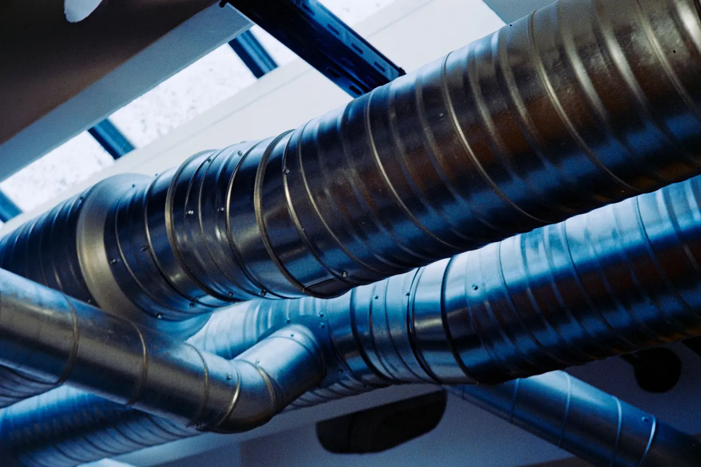
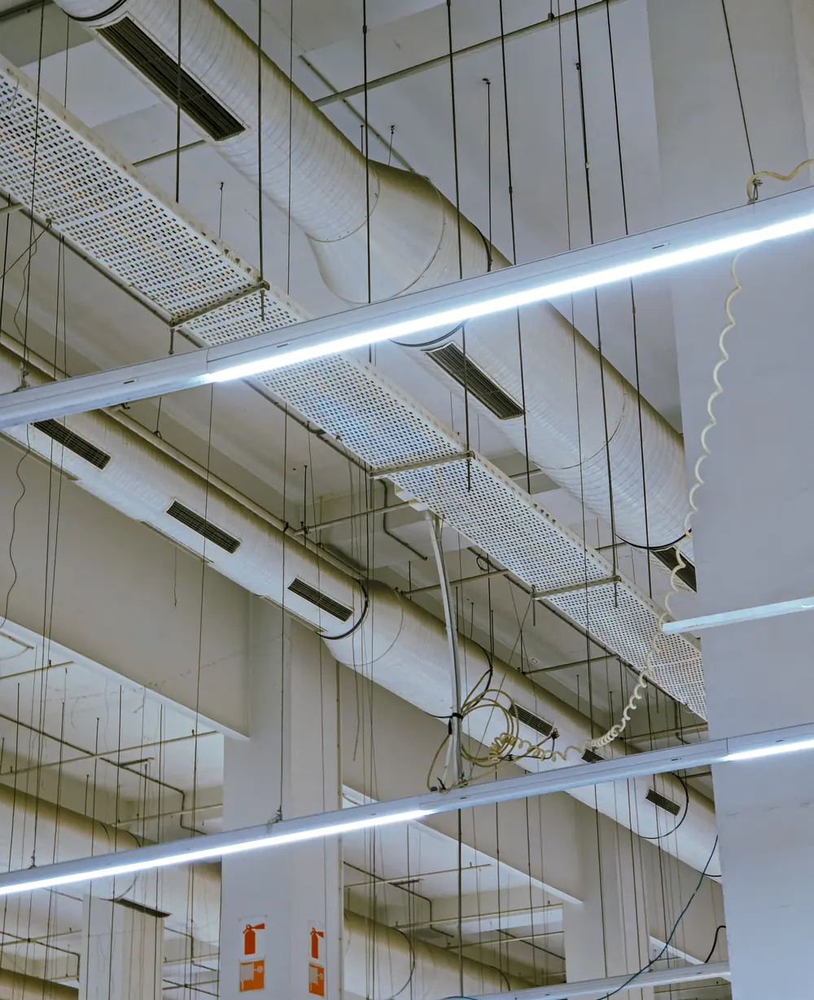

Ventilācijas projektēšana un būvuzraudzība
Gaisa apmaiņa, iekārta ar rekuperāciju un gaisa vadu trases. Būvdarbu laikā vadām vai uzraugām izbūvi.
Ko ietver ventilācijas projekts
Ventilācija ir būvprojekta AVK daļas sadaļa. Projekts nosaka, cik gaisa vajag katrai telpai, kur stāvēs iekārta un kur ies gaisa vadi.
- Rasējumi
- plāni ar gaisa vadiem un iekārtām, principiālā shēma
- Aprēķini
- gaisa daudzumi un gaisa vadu izmēri
- Specifikācija
- iekārtas, gaisa vadi un sadalītāji
- Apraksts
- risinājuma skaidrojums un prasības izbūvei

Gaisa apmaiņa
Nosakām, cik svaiga gaisa vajag katrai telpai pēc tās lietojuma un cilvēku skaita un cik gaisa jānosūc no virtuves, vannas istabas un tualetes.
Ventilācijas iekārta
Pieplūdes un nosūces iekārta ar siltuma atgūšanu jeb rekuperāciju: jauda, filtri, sildītājs un vieta, kur pie tās var piekļūt apkopei.
Gaisa vadi
Gaisa vadu izmēri un trases, kas sader ar konstrukcijām un griestu augstumu, un gaisa sadalītāji katrā telpā.
Troksnis un ugunsdrošība
Trokšņa slāpētāji, lai iekārtu nedzird guļamistabās un birojos, un ugunsdrošības vārsti, kur gaisa vadi šķērso ugunsdrošības nodalījumu robežas.
Vadība
Darbības režīmi, gaisa daudzuma regulēšana pēc vajadzības un sasaiste ar apkuri vai dzesēšanu.
Ko pārbaudām objektā
Kā būvdarbu vadītājs vai būvuzraugs pārbaudām, vai ventilāciju izbūvē pēc projekta, un apskatām gaisa vadus, pirms tos aizklāj piekārtie griesti.
-
Iekārta un piekļuve
Ventilācijas iekārta ir projektā paredzētā vai saskaņota līdzvērtīga, un pie filtriem un ventilatoriem var piekļūt apkopei.
-
Gaisa vadi un savienojumi pirms aizklāšanas
Gaisa vadu izmēri un trases atbilst projektam, un savienojumi ir blīvi.
-
Izolācija pirms aizklāšanas
Āra gaisa un izmetes gaisa vadi siltajā ēkas daļā ir izolēti, lai uz tiem nekrātos kondensāts.
-
Ugunsdrošība pirms aizklāšanas
Ugunsdrošības vārsti ir paredzētajās vietās, un vietas, kur gaisa vadi iet cauri sienām un pārsegumiem, ir noblīvētas.
-
Ieregulēšana
Gaisa daudzumi telpās ir izmērīti un ieregulēti pēc projekta, un mērījumi ir ierakstīti protokolā.
-
Dokumenti
Segto darbu akti, mērījumu protokols un iekārtas ekspluatācijas instrukcija ir gatavi sistēmas nodošanai.
Kādām ēkām
-
Privātmājām
Ventilācija ar rekuperāciju jaunai vai siltinātai mājai.
-
Daudzdzīvokļu mājām
Ventilācija atjaunošanas laikā, kad pēc siltināšanas un logu nomaiņas ar dabisko ventilāciju vairs nepietiek.
-
Birojiem, veikaliem un skolām
Telpām, kurās vienlaikus ir daudz cilvēku un svaiga gaisa vajag vairāk.
-
Ražošanas ēkām un noliktavām
Vispārējā ventilācija un vietējā nosūce no iekārtām un darba vietām.
Biežākie jautājumi
Vai privātmājai vajag ventilāciju ar rekuperāciju?
Labi siltinātā mājā ar blīviem logiem dabiskā ventilācija bieži nenodrošina pietiekamu gaisa apmaiņu. Iekārta ar siltuma atgūšanu pievada svaigu gaisu un atgūst daļu siltuma no nosūcamā gaisa. Vai tā vajadzīga jūsu mājai, pateiksim pēc plāniem.
Kur novietot ventilācijas iekārtu?
Parasti tehniskajā telpā, bēniņos vai virs piekārtajiem griestiem, kur var piekļūt filtru maiņai. Vietu izvēlamies tā, lai gaisa vadi būtu īsi un iekārtu nedzirdētu guļamistabās.
Kā gaisa vadi sader ar griestu augstumu?
Gaisa vadu trases projektējam kopā ar arhitektūras daļu: kur tie ies, kur vajag piekārtos griestus un kur pietiek ar gaisa vadu gar sienu. To labāk izlemt projektā, nevis būvlaukumā.
Vai ventilāciju var izbūvēt jau uzceltā mājā?
Jā, bet gaisa vadiem jāatrod vieta esošajās konstrukcijās. Tāpēc pārbūves projektam vispirms apskatām plānus un, ja vajag, arī pašu māju.
Pastāstiet par savu objektu
Kāda ir ēka, kur tā atrodas un kas vajadzīgs: projekts, būvdarbu vadīšana vai būvuzraudzība. Atbildēsim un pateiksim, kas vajadzīgs tālāk.